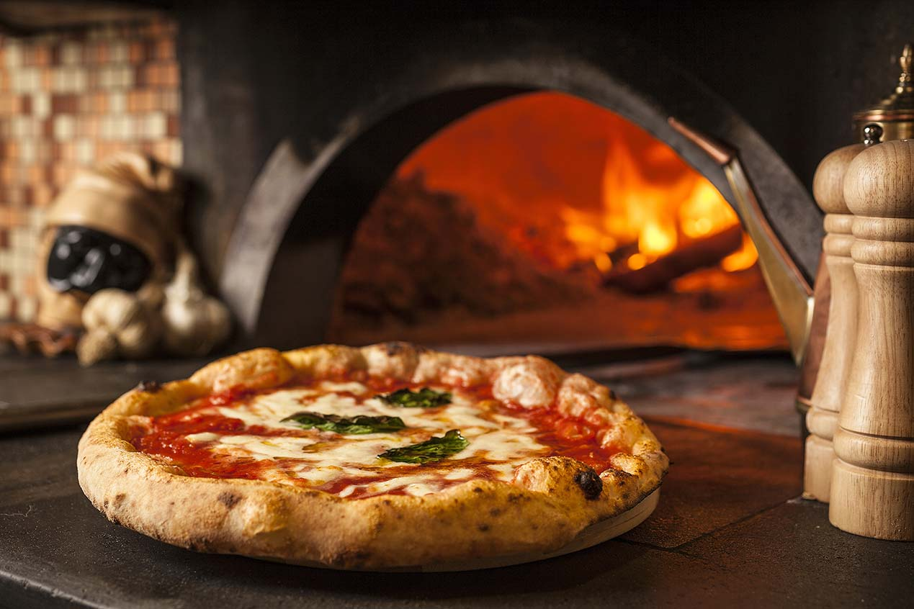

Neapolitan Pizza

Description
When you’ve had the best pizza in Naples Italy, it’s hard to go back. You know in the movie The Matrix when Neo is allowed to pick the blue and red pill, a choice between blissful ignorance or truth? Eating pizza in Naples, the place where pizza was invented, is like choosing the red pill. Once you’ve tasted Neapolitan pizza, you’ll never go back. Then you’ll spend the rest of your life trying to recreate it at home! Luckily, we did that for you. Here are all our tips and tricks for the best homemade Neapolitan pizza, so you can enjoy it for a lifetime!
Ingredients
- 1 ball Best Homemade Pizza Dough
- ⅓ cup Easy Pizza Sauce
- 3 ounces fresh mozzarella cheese (or about ¾ cup shredded mozzarella)
- Kosher salt
Steps
- Prepare the dough using the Best Pizza Dough recipe (follow this video instruction for more). Follow the preparation instructions in the dough recipe if prepared in advance.
- Place a pizza stone in the oven and preheat to 500°F. OR preheat your pizza oven (here’s the pizza oven we have!).
- Make the Homemade Pizza Sauce.
- Slice the mozzarella into ¼ inch thick pieces. If it’s incredibly watery fresh mozzarella (all brands vary), you may want to let it sit on a paper towel to remove moisture for about 15 minutes then dab the mozzarella with the paper towel to remove any additional moisture.